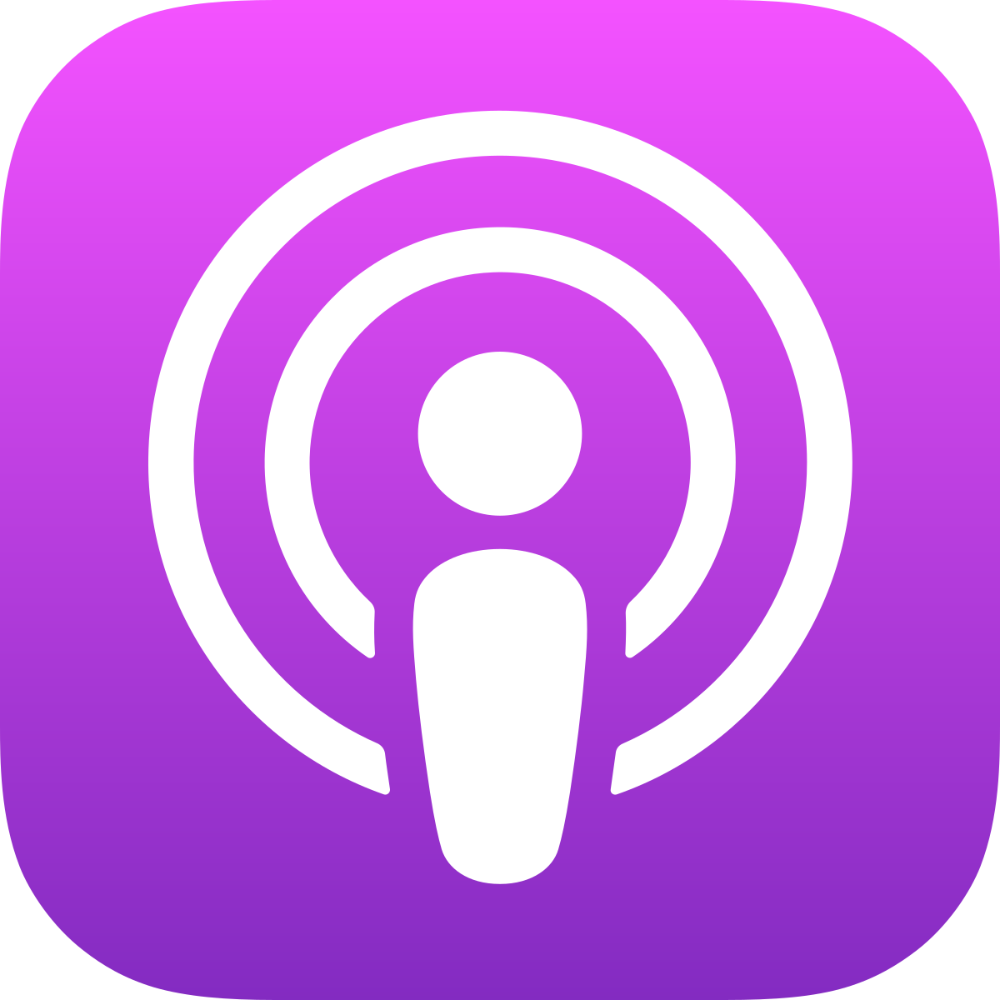
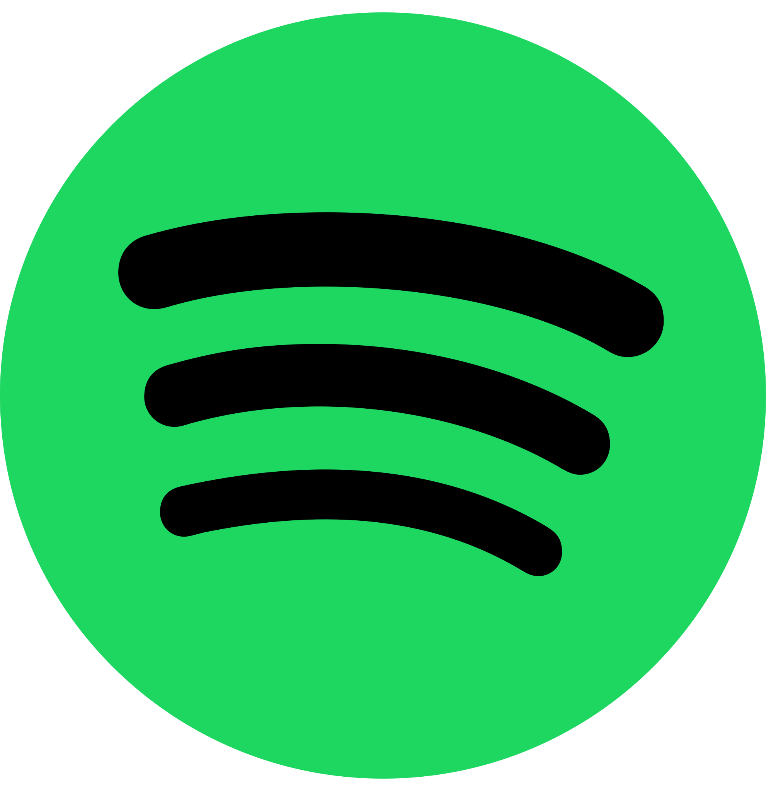
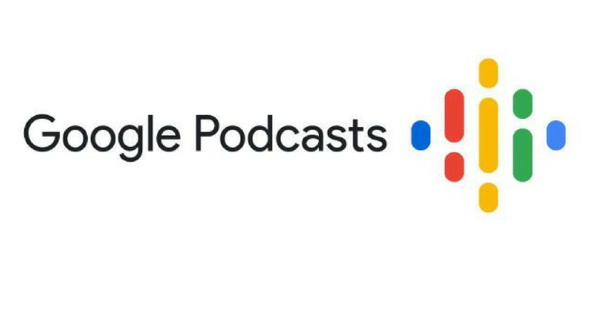
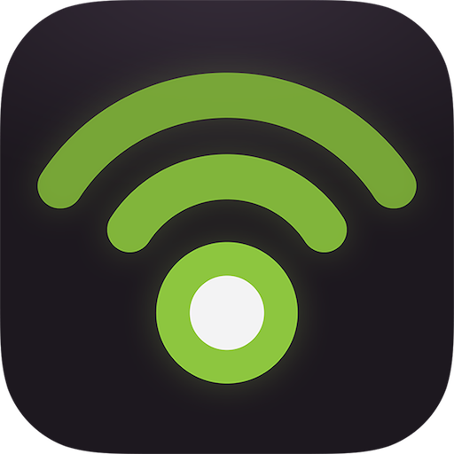
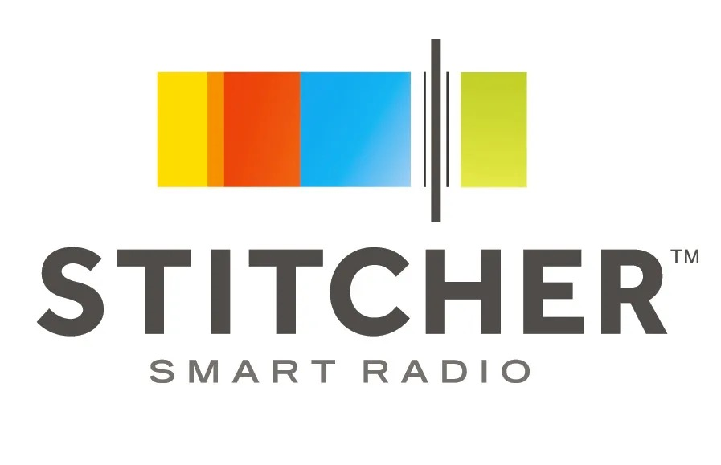
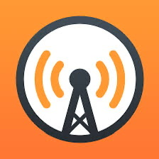
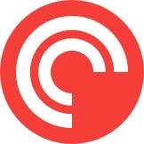

Allgemeines
Was sind Podcasts
Wikipedia: PodcastDefinition
Ein Podcast ist eine innovative Form der digitalen Unterhaltung, bestehend aus einer Reihe von Audioinhalten,
die über das Internet verbreitet und von Hörern heruntergeladen oder gestreamt werden können. Diese Audioformate,
auch als Episoden bezeichnet, bieten eine breite Palette von Themen, die von Nachrichten und Bildung über Unterhaltung
bis hin zu Geschichten und Interviews reichen.
Die Begriffsprägung "Podcast" setzt sich aus zwei Komponenten zusammen: "pod" steht für "playable on demand" (spielbar auf Abruf),
während "cast" von "Broadcast" stammt, was auf Rundfunksendungen hinweist. Dies spiegelt die Flexibilität wider,
dass Podcasts zeitunabhängig gehört werden können, sei es durch den Download oder das direkte Streaming.
Die Vielfalt der Podcast-Inhalte ist beeindruckend und reicht von traditionellen Nachrichtenformaten über Diskussionen
von Influencern und Celebrities bis hin zu fesselnden True Crime-Geschichten und vielem mehr. Diese digitale Audiorevolution
ermöglicht es Produzenten, unabhängig Inhalte zu erstellen und einem globalen Publikum zugänglich zu machen.
Ein charakteristisches Merkmal von Podcasts ist ihre Abonnierbarkeit, die es Hörern ermöglicht, automatische Benachrichtigungen
über neue Episoden zu erhalten. Plattformen wie Apple Podcasts, Spotify oder Google Podcasts dienen als Zugangsportale, auf denen
Hörer ihre favorisierten Podcasts entdecken und abspielen können. Dies schafft eine demokratische Plattform für Inhalte, auf der
sowohl etablierte als auch aufstrebende Stimmen gehört werden können.
Insgesamt repräsentiert der Podcast ein facettenreiches Medium, das die Art und Weise, wie wir Geschichten hören
und Informationen konsumieren, revolutioniert hat.
Wo kann man Podcast hören?
| Die beliebtesten Apps: | Das App-Icon dazu: |
|---|---|
| 1. Apple Podcasts: Für iOS-Benutzer ist dies eine der bekanntesten Plattformen, auf der du Podcasts abonnieren und hören kannst. |  |
| 2. Spotify: Diese Plattform bietet eine breite Auswahl an Podcasts, und du kannst auch Musik hören. Spotify ist auf verschiedenen Betriebssystemen verfügbar. |  |
| 3. Google Podcasts: Für Android-Nutzer bietet Google Podcasts eine benutzerfreundliche Möglichkeit, Podcasts zu entdecken und anzuhören. |  |
| 4. Podbean: Eine Podcast-Hosting-Plattform, die auch eine App hat, um Podcasts zu entdecken und zu hören. |  |
| 5. Stitcher Diese Plattform ermöglicht das Streaming von Podcasts und bietet Funktionen wie persönliche Playlists und Empfehlungen. |  |
| 6. Overcast Eine iOS-App, die Podcasts mit Funktionen wie Smart Speed und Voice Boost verbessert. |  |
| 7. Pocket Casts Eine plattformübergreifende App, die eine benutzerfreundliche Oberfläche und Funktionen wie automatische Downloads bietet. |  |
| 8. Castbox Diese App bietet eine umfangreiche Bibliothek von Podcasts, durchsuchbare Episoden und personalisierte Empfehlungen. |
Wer macht Podcast?
JEDER DER PODCAST MACHEN MÖCHTE.
Podcast können von jedem gemacht werden. Darunter können sich dann Einzelpersonen, Gruppen, Unternehmen,
Medienunternehmen, Organisationen oder andere befinden. Die Leute die Podcast machen werden „Podcaster“ genannt.
Dabei kümmert sich diese Podcasterin oder dieser Podcaster in der Regel um die Content- Planung
(z.B.: Redaktionsplan), die inhaltliche Vorbereitung und die Ausarbeitung der Content-Idee.
Podcasts werden von einer vielfältigen Gruppe von Menschen und Organisationen erstellt. Unabhängige Podcaster
sind oft Einzelpersonen oder kleine Gruppen, die sich leidenschaftlich für ein Thema interessieren,
sei es True Crime, Technologie, Unterhaltung oder Bildung.
Medienunternehmen, darunter Zeitungen, Magazine und Radiosender, nutzen ebenfalls Podcasts,
um ihre Inhalte einem breiteren Publikum zugänglich zu machen. Berühmte Persönlichkeiten bringen oft
eigene Podcasts heraus, um persönliche Einblicke zu teilen oder interessante Gäste einzuladen.
Unternehmen verwenden Podcasts als Marketinginstrument, um ihre Markenbekanntheit zu steigern,
während Non-Profit-Organisationen Podcasts nutzen, um ihre Botschaft zu verbreiten und
Aufmerksamkeit für ihre Anliegen zu gewinnen. Diese Vielfalt an Produzenten trägt dazu bei,
dass Podcasts eine breite Palette von Inhalten abdecken, von Bildung und Unterhaltung
bis hin zu tiefgehenden Gesprächen über verschiedenste Themen.
Viele Podcasts im Überblick (Spotify):
- Bildung
- Business
- Comedy
- Dokus & Reportagen
- Fiktion (Bücher)
- Freizeit
- Geschichte
- Gesundheit & Fitness
- Musik
- Nachrichten & Politik
- Sport
- True Crime
- Technologie